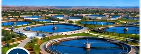
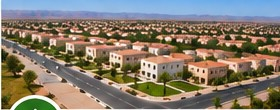
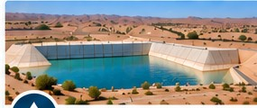

Études techniques bâtiment tout corps d’état
Études techniques, structures, lots techniques et suivi des travaux.
Voir le détail →Nos références
ROCSOL INGENIERIE a accompagné de nombreux maîtres d’ouvrage dans la conception, l’étude et le suivi de projets structurants, contribuant au développement durable des territoires.
Études techniques, structures, lots techniques et suivi des travaux.
Voir le détail →

Études, conception et suivi de réalisation des ouvrages de traitement des eaux usées.
Voir le détail →
Études techniques et suivi des travaux d’extension de réseaux électriques.
Voir le détail →
Études et suivi des travaux de viabilisation et d’aménagement de lotissements.
Voir le détail →
Études stratégiques, planification et urbanisme du territoire.
Voir le détail →
Évaluation environnementale et suivi des mesures d’atténuation.
Voir le détail →
Études techniques et accompagnement liés aux ressources minières.
Voir le détail →

Études, plans de gestion et actions de protection des ressources en eau.
Voir le détail →